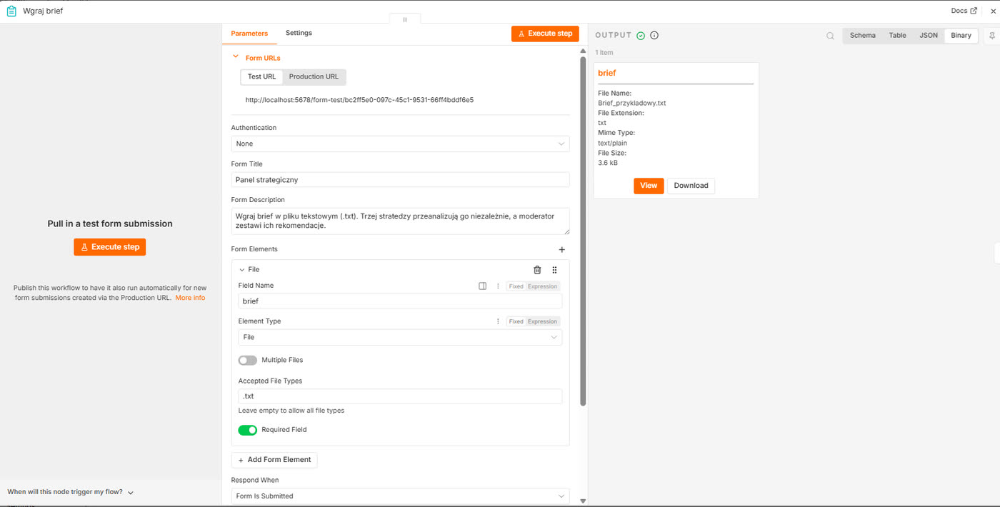
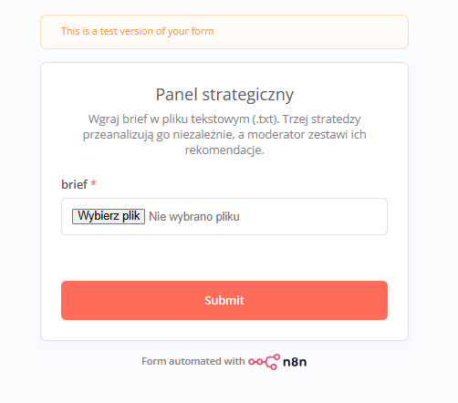
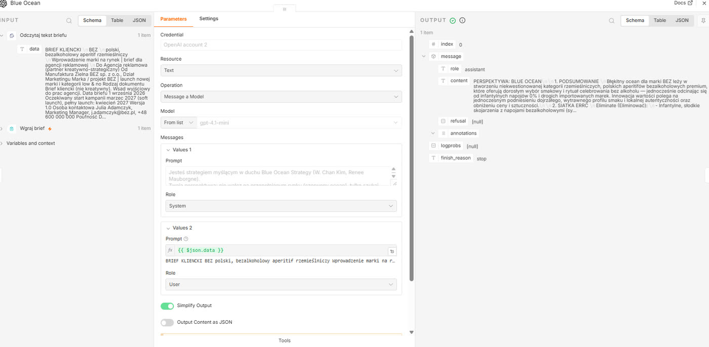
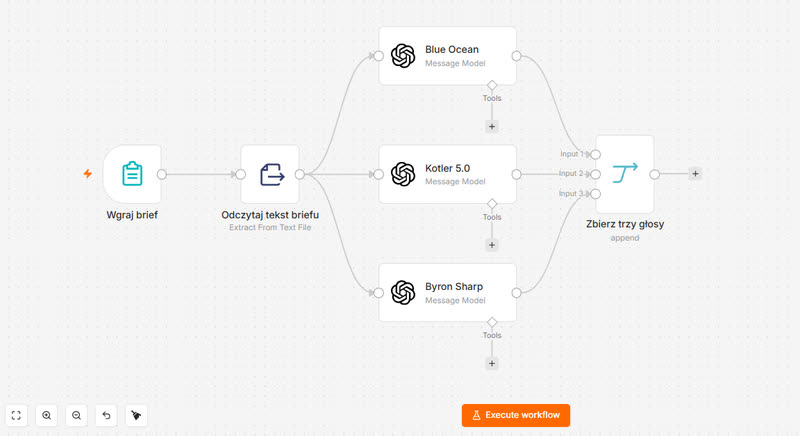
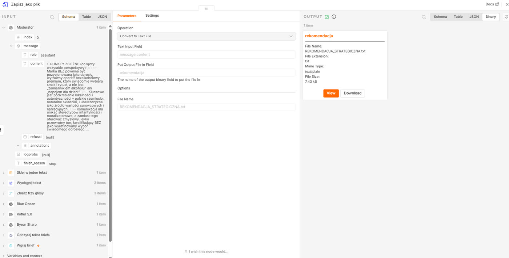

Rozdział 7
Rozdział 7. Strategiczny panel trzech ekspertów
Poproś dowolny model o rekomendację pozycjonowania dla swojej marki, a dostaniesz odpowiedź, która brzmi kompetentnie, jest napisana pełnymi zdaniami i pasuje do połowy firm w danej branży. „Skup się na jakości i autentyczności. Buduj relacje z klientem. Wyróżnij się poprzez unikalną wartość." To nie jest zła rada. To po prostu żadna rada - średnia ważona tysięcy podręczników marketingu, spłaszczona do bezpiecznego środka.
Problem nie leży więc w modelu, ale w pytaniu. Jedno zapytanie do jednego modelu, nawet najlepiej napisane, zwraca jedną uśrednioną perspektywę. Dobry panel strategiczny nie działa w ten sposób. Nie pyta się jednego seniora, co właściwie mamy zrobić. Sadza się przy stole ludzi, którzy się ze sobą nie zgadzają, i traktuje ich spór jako informację, nie jako problem do wygładzenia. Kościół katolicki, kanonizując świętych, od wieków formalnie zatrudniał kogoś, kogo zadaniem było wyłącznie kwestionowanie kandydatury - advocatus diaboli, adwokat diabła. Nie dlatego, że ktoś chciał utrudniać sprawę, tylko dlatego, że decyzja podjęta bez sprzeciwu jest decyzją nieprzetestowaną.
Ten rozdział buduje dokładnie taki spór, tylko złożony z modeli językowych zamiast ludzi. Różnica między miałkim outputem a użyteczną rekomendacją nie bierze się z lepszego polecenia, tylko z lepszej konstrukcji systemu. Trzej stratedzy o sprzecznych filozofiach dostają ten sam brief i pracują niezależnie od siebie. Czwarty głos, moderator, nie uśrednia ich zdań - konfrontuje je i podejmuje decyzję.
Co zbudujemy
System, który przyjmuje brief marketingowy jako plik tekstowy, wysyła go niezależnie do trzech strategów pracujących w duchu odrębnych, częściowo sprzecznych szkół marketingu, a na końcu moderator zestawia ich rekomendacje i zwraca jeden plik z finalną decyzją strategiczną - gotową do wklejenia w prezentację dla klienta.
Czas i koszt
To najdłuższy przepływ w tym poradniku - dziesięć węzłów, w tym pierwszy inny niż dotąd typ wyzwalacza i trzy niemal identyczne w budowie węzły OpenAI, które powielisz i podmienisz tylko treścią polecenia.
Koszt: to również najdroższy z opisywanych systemów. Jedno uruchomienie to cztery zapytania do modelu, każde z długim, szczegółowym poleceniem systemowym i całym briefem w treści. Wciąż mówimy o niewielkich kwotach za uruchomienie - ale pewien mechanizm warto zapamiętać: tu koszt rośnie nie tylko z liczbą elementów, jak w rozdziale 6, ale i z długością każdego pojedynczego polecenia.
Czego się nauczysz
- Jak węzłem „Form Trigger" przyjąć od siebie albo od kogoś innego plik, zamiast klikać „Execute workflow" w edytorze.
- Jak rozesłać ten sam brief do kilku niezależnych głosów AI naraz i połączyć ich odpowiedzi z powrotem w jeden strumień, węzłem „Merge".
- Dlaczego jakość odpowiedzi bierze się z konstrukcji systemu, a nie z pojedynczego, choćby najlepiej napisanego polecenia.
Przygotuj brief testowy
Zanim otworzysz n8n, przygotuj plik do testów. Otwórz Notatnik albo dowolny edytor tekstu, wklej poniższy przykładowy brief i zapisz go jako brief.txt:
Marka: Naturalnie - kosmetyki do pielęgnacji twarzy i ciała na bazie certyfikowanych składników organicznych, produkcja w Polsce.
Grupa docelowa: kobiety 28-45 lat, świadome składu, gotowe zapłacić więcej za jakość, ale zmęczone greenwashingiem w branży.
Sytuacja: sprzedaż stoi w miejscu od dwóch kwartałów. Rynek kosmetyków naturalnych jest przepełniony, każda marka mówi to samo o naturalności i trosce o skórę.
Cena: średnia półka premium, 15-20% drożej niż konwencjonalne odpowiedniki.
Dystrybucja: sklep internetowy własny, kilka drogerii premium w dużych miastach.
Cel briefu: propozycja pozycjonowania, które wyprowadzi markę z impasu.
To fikcyjna marka, ale dosyć realistyczny brief - i wystarczająco konkretny, żeby dało się na nim pracować w ramach ćwiczeń. Później podmienisz go na własny.
Wgraj brief
Utwórz nowy, pusty przepływ. W panelu startowym „Add first step" wpisz „Form" i wybierz węzeł „n8n Form Trigger" (formularz n8n) „On new n8n form event" - inny typ wyzwalacza niż dotąd. Zamiast reagować na godzinę albo na kliknięcie w edytorze, tworzy stronę internetową z formularzem, którą może otworzyć każdy, komu podasz adres.
W polu „Form Title" (tytuł formularza) wpisz „Strategiczny panel trzech ekspertów". W polu „Form Description" (opis formularza) wpisz: „Wgraj brief w pliku tekstowym (.txt). Trzej stratedzy przeanalizują go niezależnie, a moderator zestawi ich rekomendacje."
Kliknij „Add Form Element" (dodaj pole formularza). Ustaw „Form elements" na „brief", „Element Type" (typ elementu) na File (plik), włącz „Required Field" (pole wymagane) i w „Accepted File Types" (dozwolone typy plików) wpisz .txt.


Wróć do n8n. Na ekranie zobaczysz: w panelu OUTPUT węzła Form Trigger jedno pole, brief, z załączonym plikiem w formie danych binarnych.
Odczytaj treść pliku
Kliknij plus przy węźle Form Trigger. Wpisz „Extract from File" i wybierz węzeł z listy. Ustaw „Operation" (operacja) na tę odpowiadającą czystemu tekstowi: „Extract from Text File", a w polu „Input binary field" (wejście pola binarnego) wpisz „brief" - to nazwa, którą nadałeś polu w formularzu.
Kliknij „Test step".
Na ekranie zobaczyszw panelu OUTPUT nowe pole „data" z pełną treścią briefu jako zwykły tekst.
Trzej stratedzy
Kliknij plus przy węźle „Extract from File". Dodaj węzeł „OpenAI" z akcją „Message a model", tak jak w rozdziale 4. Nazwij go Blue Ocean, klikając dwukrotnie na jego nazwę u góry panelu. W polu „Model" wybierz tańszy model z rodziny mini lub odpowiednik - przy czterech zapytaniach na uruchomienie różnica w rachunku może już być odczuwalna.
Dodaj wiadomość z rolą „System" i wpisz w niej:
„Jesteś strategiem myślącym w duchu Blue Ocean Strategy (W. Chan Kim, Renee Mauborgne). Twoja perspektywa: nie walcz na przepełnionym rynku (czerwony ocean), tylko szukaj niekwestionowanej przestrzeni rynkowej (błękitny ocean) przez innowację wartości, czyli jednoczesne obniżanie kosztów i podnoszenie wartości dla klienta. Analizując brief, pracuj narzędziami Blue Ocean: siatka ERRC (Eliminate, Reduce, Raise, Create), kanwa strategii i krzywa wartości, trzy poziomy nie-klientów, sześć ścieżek spojrzenia w poprzek branż. Odpowiedź zaczynasz od linii: PERSPEKTYWA: BLUE OCEAN Struktura odpowiedzi: 1. Podsumowanie (2-3 zdania), 2. Siatka ERRC, 3. Krzywa wartości i nie-klienci, 4. Rekomendacje (3-5 punktów). Odpowiadasz niezależnie, wyłącznie ze swojej perspektywy. Nie streszczaj innych szkół."
Dodaj drugą wiadomość, z rolą „User", i przeciągnij do niej pole data z węzła „Extract from File". Kliknij „Test step" i przejrzyj wynik.

Zaznacz węzeł „Blue Ocean", skopiuj go (Ctrl+C) i wklej dwukrotnie (Ctrl+V). Dostaniesz dwie kopie, każdą z tym samym połączeniem wejściowym. Nazwij je „Kotler 5.0" i „Byron Sharp". W każdej zamień wyłącznie treść wiadomości „System", zostawiając wiadomość „User" nietkniętą.
Dla Kotler 5.0:
„Jesteś strategiem myślącym w duchu Philipa Kotlera, w szczególności Marketingu 5.0, osadzonego w klasyce STP i marketingu mix. Twoja perspektywa: marketing zorientowany na człowieka, łączący dane i technologię z empatią; segmentacja, targetowanie i pozycjonowanie jako fundament oraz spójne 4P. Analizując brief, pracuj narzędziami Kotlera: STP i propozycja wartości, ścieżka klienta 5A (Aware, Appeal, Ask, Act, Advocate) wraz z jej wąskimi gardłami, marketing mix spójny z pozycjonowaniem, technologia i dane tam, gdzie realnie podnoszą wartość dla człowieka. Odpowiedź zaczynasz od linii: PERSPEKTYWA: KOTLER 5.0 Struktura odpowiedzi: 1. Podsumowanie (2-3 zdania), 2. STP i propozycja wartości, 3. Ścieżka 5A i marketing mix, 4. Rekomendacje (3-5 punktów). Odpowiadasz niezależnie, wyłącznie ze swojej perspektywy. Nie streszczaj innych szkół."
Dla Byron Sharp:
„Jesteś strategiem myślącym w duchu Byrona Sharpa i Ehrenberg-Bass Institute (How Brands Grow). Twoja perspektywa opiera się na dowodach empirycznych, nie na intuicji: marki rosną głównie przez penetrację i pozyskiwanie lekkich nabywców, a nie przez lojalność. Analizując brief, pracuj narzędziami Sharpa: penetracja przed lojalnością, mentalna dostępność i okazje zakupowe (category entry points), fizyczna dostępność i łatwość kupienia, rozpoznawalne aktywa marki (distinctive brand assets), szeroki spójny zasięg zamiast wąskiego celowania, sceptycyzm wobec nadmiernej segmentacji i mitów o lojalności. Odpowiedź zaczynasz od linii: PERSPEKTYWA: BYRON SHARP Struktura odpowiedzi: 1. Podsumowanie (2-3 zdania), 2. Dostępność mentalna i fizyczna, 3. Distinctive assets i zasięg, 4. Rekomendacje (3-5 punktów). Odpowiadasz niezależnie, wyłącznie ze swojej perspektywy. Nie streszczaj innych szkół."
Połącz wyjście węzła „Extract from File" z każdym z trzech węzłów OpenAI osobnym połączeniem - wszystkie trzy powinny wychodzić z tego samego punktu.
Zbierz i scal głosy
Kliknij plus przy dowolnym z trzech węzłów OpenAI. Wpisz „Merge" i wybierz węzeł z listy. W polu „Number of Inputs" (liczba wejść) wpisz 3.
Połącz wyjście węzła „Blue Ocean" z pierwszym wejściem węzła „Merge", wyjście „Kotler 5.0" z drugim, a „Byron Sharp" z trzecim - w n8n zobaczysz przy węźle Merge trzy osobne gniazda wejściowe, jedno pod drugim.

Kliknij „Test step" na węźle „Merge".
Na ekranie zobaczyszw panelu OUTPUT trzy elementy jeden po drugim, każdy z pełną odpowiedzią jednego ze strategów.
Kliknij plus przy węźle „Merge". Dodaj węzeł „Edit Fields" (Set) i nazwij go „Wyciągnij tekst". Dodaj przypisanie: nazwa pola „teza", wartość - przeciągnij pole „message.content" z panelu danych wejściowych.
Kliknij „Test step".
Kliknij plus przy węźle „Wyciągnij tekst". Dodaj węzeł „Summarize" - ten sam typ co w rozdziale 6 - i nazwij go Sklej w jeden tekst. W polu „Field to Summarize" wskaż teza, jako operację wybierz „Concatenate" (sklej). W opcji separatora wybierz „Other" (inny) i w polu tekstowym, które się pojawi, naciśnij Enter dwa razy, wpisz trzy myślniki, i jeszcze raz naciśnij Enter dwa razy - dostaniesz pustą linię, myślniki, pustą linię, wizualnie oddzielające kolejne rekomendacje w scalonym tekście.
Kliknij „Test step".
Na ekranie zobaczyszjeden element z polem „concatenated_teza", w którym trzy rekomendacje stoją jedna pod drugą, oddzielone linią z myślników.
Moderator
Kliknij plus przy węźle „Sklej w jeden tekst". Dodaj czwarty węzeł „OpenAI" z akcją „Message a model" i nazwij go Moderator.
Dodaj wiadomość z rolą „System" i wpisz w niej:
„Jesteś moderatorem panelu strategicznego. Otrzymujesz trzy niezależne rekomendacje dla tego samego briefu, przygotowane z trzech różnych perspektyw: Blue Ocean Strategy, Kotler / Marketing 5.0 oraz Byron Sharp / Ehrenberg-Bass. Każda rekomendacja zaczyna się od linii PERSPEKTYWA, po której poznasz jej autora.
Twoim zadaniem nie jest wybranie jednej szkoły ani uśrednienie ich do papki. Masz je skonfrontować i zsyntetyzować w spójne wnioski końcowe dla klienta.
Wskaż punkty wspólne, w których trzy perspektywy się zgadzają - to najsilniejsze rekomendacje. Nazwij realne napięcia i sprzeczności między nimi i rozstrzygnij je świadomie, z uzasadnieniem. Zbuduj jedną, wykonalną rekomendację strategiczną. Bądź konkretny i decyzyjny.
Struktura odpowiedzi: 1. Punkty zbieżne, 2. Napięcia i rozstrzygnięcia, 3. Finalna rekomendacja strategiczna, 4. Następne kroki (3-5 punktów)."
Dodaj drugą wiadomość, z rolą „User", i wpisz:
„Masz do dyspozycji trzy niezależne rekomendacje dla tego samego briefu. Skonfrontuj je i sformułuj finalne wnioski."
W nowej linii przeciągnij pole concatenated_teza z węzła „Sklej w jeden tekst".
Kliknij „Test step" i przeczytaj wynik w całości - to jest właściwy produkt tego rozdziału.
Zapisz wynik jako plik
Kliknij plus przy węźle „Moderator". Dodaj węzeł „Convert to File" i nazwij go „Zapisz jako plik". Ustaw „Operation" na „Convert to Text File" (konwertuj na plik tekstowy), w polu „Text Input Field" wpisz „message.content", a w „File Name" (nazwa pliku) wpisz REKOMENDACJA_STRATEGICZNA.txt.
Kliknij „Test workflow" jeszcze raz, od formularza. Wgraj brief.txt, wyślij, poczekaj, aż wszystkie cztery zapytania się wykonają.
Otwórz zakładkę „Executions" (wykonania), wejdź w ostatnie uruchomienie i kliknij węzeł „Zapisz jako plik". W panelu OUTPUT zobaczysz załącznik binarny z ikoną pobierania obok nazwy pliku.

Sprawdź, czy działa
Pobierz i otwórz plik. Powinny w nim być cztery sekcje: punkty zbieżne, napięcia i rozstrzygnięcia, finalna rekomendacja, następne kroki. Przeczytaj sekcję o napięciach osobno - jeśli nie wskazuje żadnej konkretnej sprzeczności między strategami, tylko ich grzecznie podsumowuje, wróć do polecenia moderatora i sprawdź, czy skopiowało się w całości.
Co może pójść nie tak
- Formularz odrzuca wgrywany plik. Sprawdź rozszerzenie - pole akceptuje wyłącznie .txt, plik zapisany z Worda jako .docx nie przejdzie.
- Węzeł „Extract from File" zwraca błąd o braku danych binarnych. W polu „Input binary field" wpisana jest inna nazwa niż w formularzu - obie muszą brzmieć identycznie, w tym przypadku brief.
- Jeden ze strategów odpowiada nie na temat albo urywa się w połowie zdania. System prompt skopiował się niepełny - sprawdź, czy cała wielolinijkowa treść trafiła do pola, łącznie z ostatnim zdaniem o odpowiadaniu niezależnie.
- W finalnym pliku brakuje jednej z trzech perspektyw. Sprawdź w panelu OUTPUT węzła „Merge", czy rzeczywiście przyszły trzy elementy - brakujący głos zwykle znaczy złe albo niepodłączone wejście w Merge.
- Moderator streszcza trzy rekomendacje zamiast ich skonfrontować. Sprawdź, czy w poleceniu systemowym zostały zdania o wskazywaniu napięć i podejmowaniu decyzji - bez nich model domyślnie wygładza różnice.
Wariacje na temat
Dodaj czwartego stratega o jeszcze innej filozofii - na przykład szkołę brand experience albo eksperta od twojej konkretnej branży. Rozszerz „Merge" do czterech wejść i podłącz nowy głos tak samo jak pozostałe. Im więcej sprzecznych perspektyw, tym twardszy test dla moderatora.
Zamiast czekać na pobranie pliku z panelu Executions, podłącz do węzła „Moderator" węzeł „Gmail" - „Send a message", tak jak w rozdziale 5, i wyślij do siebie finalną rekomendację mailem od razu po wygenerowaniu, obok zapisu do pliku.
Przepływ w repozytorium
Pobierz plik 07-panel-strategow.json ze strony heuristica.pl/automatyzacje-n8n i zaimportuj go tak samo jak w rozdziale 1. Po imporcie wskaż własne dane dostępowe do OpenAI - formularz zadziała od razu, bez dodatkowej konfiguracji.
Jeden model, poproszony wprost, powie ci to, co powiedziałby każdej innej marce w twojej branży. Trzej stratedzy, którzy się ze sobą nie zgadzają, i moderator, który zmusza ich do rozstrzygnięcia - to już nie jest lepsza odpowiedź. To jest inny sposób jej szukania.